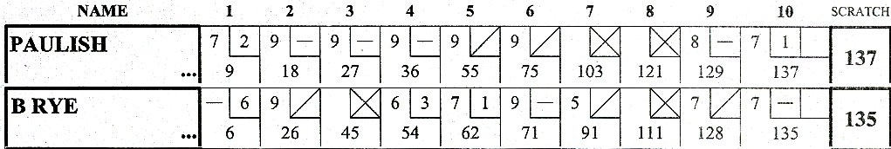

Objectif
Écrire une classe BowlingGame ayant 2 méthodes :
- roll(pins) : appelé à chaque fois qu'un joueur fait tomber une quille (pin). L'argument correspond au nombre de quille tombées.
- score() : appeler à la fin de la partie. Elle retourne le score total de la partie.
Rappel bowling

- Une partie se décompose en 10 frames.
- 2 boules lancées dans chaque frame (sauf Strike).
- Un Strike rapporte 10 points plus le nombre de quilles abattues aux 2 lancers suivants.
- Un Spare rapporte 10 points plus le nombre de quilles abattues au lancer suivant.
- Lors du dixième lancer, un strike va permettre de lancer deux boules supplémentaires.
- Lors du dixième lancer, un spare va permettre de lancer une boule supplémentaire.